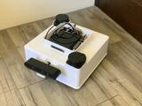
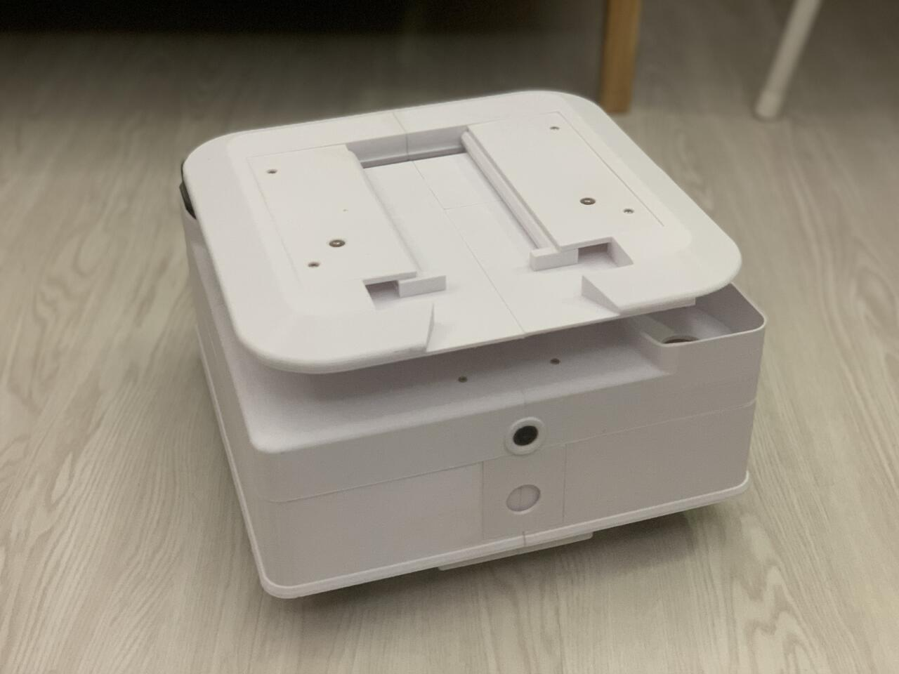

whoami ▍
Robotics Controls & Sim-to-Real Engineer
Building learning-based and model-based controllers that transfer from simulation to real robots.
01 / Selected Work
Controls, robot learning, and sim-to-real — from production autonomy to humanoid deployment.
Primary · Professional
Diagnosed a sim-to-real gap in a learned locomotion policy, characterized actuator latency and bandwidth limits, and combined LIPM trajectory priors with residual RL to reach 30 minutes of continuous walking on a proprietary humanoid.
Current Work · UC Berkeley
Developing whole-body control for locomotion and manipulation on the AgiBot A3 humanoid, extending Berkeley's HITTER baseline toward generalized target selection and strike planning.
The Construct · Final Project
Built a MoveIt 2 pick-and-place pipeline on a UR3e using depth-camera point clouds, least-squares circle fitting, and dynamic planning-scene updates — validated in simulation and on physical hardware.
Kingwaytek · Professional
Raised autonomous operation rate from 75% to 93% in constrained industrial environments through trajectory optimization and behavior/freespace planning with Autoware.
02 / Deep Dive • Case Study
From simulation failure analysis to physical humanoid deployment
A reinforcement-learning locomotion policy performed successfully in Isaac Sim but degraded in MuJoCo and on the physical humanoid. Investigation traced the dominant sim-to-real gap to actuator latency, bandwidth limitations, and unmodeled parallel-linkage dynamics.
A locomotion policy trained end-to-end in Isaac Sim walked reliably in simulation, but performance degraded in MuJoCo and further on the physical humanoid with linear-actuator-driven parallel-linkage legs. Rather than treating this as a reward-tuning problem, the gap was investigated as a physical-system problem: what was the policy implicitly relying on in simulation that the real actuators could not reproduce?
Observed
The gait that walked cleanly in Isaac Sim did not reproduce that performance in MuJoCo or on the physical robot.
Hypothesis
The policy was exploiting response characteristics — such as near-instantaneous actuator response — that were not present on the real robot.
Investigation
Actuator and closed-loop response were characterized directly on hardware and compared against the simulated actuator model.
Conclusion
The transfer gap was strongly influenced by actuator latency, bandwidth limits, and unmodeled parallel-linkage dynamics not sufficiently represented during training.
Closing the gap required characterizing what the physical actuators could actually execute, rather than continuing to iterate on the simulated model in isolation. System identification — including chirp-sweep testing of the joint actuators — measured closed-loop bandwidth and exposed actuator nonlinearities the initial simulation did not capture. This characterization defined the real constraints the control stack and training environment needed to respect.
The humanoid's parallel-linkage leg joints are driven by linear actuators rather than direct rotary actuation at each degree of freedom, so joint-space control required an explicit mapping between joint motion/forces and linear actuator motion/forces. A CasADi-generated C++ virtual-work solver computed this mapping in real time for the 8 linear-actuator parallel-linkage joints, with Jacobian-determinant and actuator-stroke analysis defining singularity-free operating ranges ahead of torque dispatch — running inside a 1 kHz real-time control loop.
On top of the kinematic mapping, impedance control and joint-level force control compensated for actuator non-linearities at the parallel-linkage leg joints. Controller gains were validated against the actuator's characterized closed-loop bandwidth using chirp-sweep testing. The physical walking result depended on this low-level control stack, not on the learned policy alone.
The learned policy did not replace the robotics stack — it corrected it.
Model-Based Prior
LIPM Trajectory Prior
Learning-Based Correction
Residual RL
Low-Level Control
Impedance / Force Control
Physical Humanoid
An LIPM trajectory prior generated a structured nominal locomotion reference; a residual RL policy learned corrections on top of that reference to handle dynamics the model-based prior did not capture; the combined command was executed through the impedance/force control layer above. This structure was chosen because the LIPM prior already encoded a physically reasonable nominal gait, so the learned component only needed to correct for model mismatch and unmodeled effects rather than generate locomotion from scratch — reducing what the policy had to learn and keeping its behavior closer to the characterized actuator constraints.
The residual policy was trained in Isaac Lab with reward shaping and domain randomization over actuator dynamics and latency. Training randomization was focused on the actuator dynamics and latency identified during hardware characterization, aligning the simulated training distribution more closely with measured physical constraints.
Without operator intervention or controller resets.
Technical details are presented at a high level; proprietary implementation and deployment media are omitted.
03 / Current Work • UC Berkeley
Extending my humanoid controls background toward whole-body robot learning: locomotion and manipulation unified on a single policy stack.
UC Berkeley · 08/2026 – present
Developing whole-body control for locomotion and manipulation on the AgiBot A3 humanoid, extending Berkeley's HITTER baseline toward generalized target selection and strike planning.
04 / Deep Dive • Vision-Based Manipulation
Depth camera → point cloud → target detection → motion planning → Cartesian execution → physical robot. Validated in simulation and on a physical UR3e.
The Construct — Final Project · Physical Robot: UR3e
Built a MoveIt 2 pick-and-place pipeline on a UR3e using depth-camera point clouds, least-squares circle fitting, constrained Cartesian motion, and dynamic planning-scene updates, eliminating false collision aborts during execution.
Simulation validation of the perception-to-planning workflow before physical execution.
Physical UR3e execution integrating depth-camera perception, target selection, constrained Cartesian motion, and real-robot placement.
05 / Case Study • Autonomous Vehicle Planning
Scaling behavior planning and motion planning algorithms for autonomous driving fleets operating inside confined, safety-critical industrial environments — combining freespace planning for unmapped junctions and dynamic obstacles with constrained trajectory generation for fleet-wide deployment.
Fleet Scalability
Optimized behavior planning and motion planning algorithms for autonomous driving fleets, scaling the autonomous operation rate from 75% to 93% within complex, constrained industrial environments.
Junction Modeling
At complex intersections, merging lanes cross and overlap rather than remaining strictly adjacent — causing traditional lane-following algorithms to detect insufficient driving space and fail. Using behavior planning, redesigned intersection navigation by modeling junctions as geometric polygons that break free from strict HD-map lane boundaries within the intersection area, enabling natural, flexible driving behavior similar to human navigation through open junction spaces.
Trajectory Optimization
Developed multi-constraint trajectory optimization balancing kinematic feasibility, collision margin, and ride comfort — integrated with Autoware to drive automated docking and reverse-parking workflows for wireless charging infrastructure.
06 / More Robotics Work
Full-stack robotic-system integration, from mechanical build to autonomous navigation.
Undergraduate Researcher · Networked Control Robotics Lab, NYCU
Advisor: Prof. Teng-Hu Cheng
Built and integrated a differential-drive AMR from physical hardware through autonomous navigation — mechanical and electrical integration, an emergency stop system, dual-LiDAR sensing and calibration, low-level motor control, and Cartographer SLAM — validating the complete stack on physical hardware.


Personal Project
SimulationNavigate → Localize Rack → Dock → Pick Up / Transport
Dynamic Footprint Adaptation
Updated Nav2 collision footprints in real time based on payload geometry, allowing navigation constraints to reflect the AMR's changing footprint before and after shelf pickup.
LiDAR-Based Docking Estimation
Developed a custom LiDAR estimator using intensity-based feature extraction and temporal pose smoothing to estimate shelf centroids for docking.
Reusable ROS2 Docking Component
Packaged the docking pipeline as a reusable ROS2 Component and used intra-process communication to reduce message-copy and communication overhead between modules.
Mechanical Practice · NYCU
Physical SystemMulti-shuttle automated storage and retrieval system with two elevators, barcode/QR identification, and remote web monitoring, built with concurrent multithreading for storage coordination.
Motor-Control Architecture
Resolved multi-motor instability by offloading PWM generation from the CPU to a PCA9685 controller and expanded I/O capability using MCP23017 modules to support additional motors and sensors.
Recognition
1st Place — Mechanical Engineering Project Competition, NYCU (2021)
Excellent Award — Taiwan Society of Precision Engineering (2021)
07 / Career
FIH Co., Ltd. (Subsidiary of Foxconn Group) · Software Research Center · New Taipei, Taiwan
Diagnosed a sim-to-real gap in a learned locomotion policy and led development of the residual-RL and real-time control pipeline that achieved 30 minutes of continuous walking on the proprietary humanoid.
Kingwaytek Technology Co., Ltd · Software Research Center · Taoyuan, Taiwan
Spearheaded motion planning algorithms and site deployments for industrial autonomous vehicle fleets, scaling autonomous operation rates from 75% to 93% in constrained industrial environments using Autoware.
08 / Summary
I'm a robotics engineer working at the intersection of control, learning, and physical robot deployment. My 2 years of industry experience spans autonomous vehicles and humanoid locomotion, with a particular focus on understanding why algorithms fail when they meet real hardware. I'm currently pursuing an M.Eng. in EECS at UC Berkeley, extending this foundation toward whole-body robot learning.
09 / Toolbox
Robot Learning
Simulation & Physics
Languages
Tools & Hardware
10 / Academics
M.Eng. in Electrical Engineering and Computer Sciences (EECS)
Concentration: Robotics and Embedded Software
Graduate coursework: Convex Optimization, Optimal Control, Model Predictive Control
B.S. in Mechanical Engineering; Double Major in Electrical Engineering
Overall GPA: 3.85/4.30 · Major GPA: 4.11/4.30
Academic Excellence Award — Top 3% (of 110 students), 2021 & 2022
11 / Contact
Open to conversations on humanoid locomotion, robot learning, and sim-to-real control. Reach out any time.